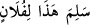
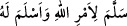
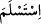
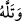
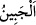
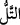
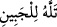

okunmuştur. Kelimenin aslı
“ sözünden gelmektedir. Bu, falancaya teslim oldu denilir, yani ona
gönülden bağlandı ve o konuda münazaa ve tartışmadan kurtuldu demektir. “ sözleri de bu mânâdan nakledilmiştir. Yâni nefsini, canını ve ruhunu
ihlas ve samimiyetle Allah’a teslim etti ve nefsini kurtardı, demektir. Yine “ fiili
de aynıdır. O da Allah’a teslim oldu demektir. Katâde “ fiili hakkında der ki,
İbrahim (a.s.) oğlunu; İsmail (a.s.)’da canını Allah’a teslim ettiler.
İtaat edip boyun eğerek “onu alnı” boynu ve yanağı “üzerine yatırınca:”
Kâmûs’ta der ki: “ demek onu yere vurdu, boynu yanağı üzere yere yatırdı,
demektir. “ ise alnın iki yanından biridir. Yüzün göz ile kulak arasındaki zülüflerin
üstünde sağ ve sol cephelerden iki yanı vardır. Râğıb der ki: “ kelimesi aslında
yüksek yer demektir. Telîl, boyun demektir. “ ifadesi, onu alnı yahut boynu
üzere yere düşürdü, demektir. Bir başkası şöyle der: İbrahim (a.s.) oğlunu yanı üzere
yere atıp yatırdı; oğlu alnı üzere yere düştü. Yani kesme ve kurban etme ameliyesinin
yüzükoyun bir vaziyette icra edileceği bir pozisyon aldılar. Böylece baba ve oğul bu işi
sabır ve metanetle icra ederek Rahman Teâlâ’yı hoşnut ve memnun edecek; şeytanı da
mahzun bırakacaklardır. Bu ameliye Mekke’de Mina bölgesinde bir kayanın yanında
yahut Mina Mescidi’ni yukarıdan gören bir mevkide yahut bugün hacıların Mina’da
kurban kestikleri yerde vuku buldu.
Rivâyete göre İblis İbrahim (a.s.)’ı bu işten caydırmak için Mina’da Cemre-i
Akabe’de İbrahim (a.s.)’ın karşısına çıktı. İbrahim (a.s.) burada şeytana yedi taş atarak
onu kovdu. Şeytan defolup gitti. Sonra Cemre-i Vustâ’da yine karşısına çıktı. İbrahim
(a.s.) burada da şeytana yedi taş attı ve şeytan defolup gitti. Sonra Cemre-i Kübra’da
yine karşısına çıktı. İbrahim (a.s.) burada da şeytana yedi taş attı ve şeytan defolup gitti.
Sonra İbrahim (a.s.) Allah Teâlâ’nın emrini yerine getirmek üzere yoluna devam etti ve
bilindiği gibi İsmail (a.s.)’ı kesip kurban etmek istedi. İşte bundan dolayı hacda “şeytan
taşlamak” meşru ve vacip oldu. Şeytan taşlamak haccın vaciplerindendir. Terk edildiği
taktirde kurban/fidye vacip olur.
et-Te’vîlâtü’n-Necmiyye’de der ki, bu kıssada rubûbiyet hakkının korunması, ubûdiyet
âdâbının gözetilmesi konusunda şu husus dikkat çekici ve takdire şayan bir durumdur:
İsmail (a.s.) kesmenin acısıyla hareket etmemesi ve gayr-i ihtiyari de olsa tepki
vermemesi için babasından ellerini ve ayaklarını bağlamasını istemişti. Çünkü Allah
Teâlâ’dan babasının sitem ve azar işitmesinden endişe ediyordu. Sonra tam kesileceği
sırada babasından bu bağların çözülmesini istedi ve ben Rabbimin bana “Benim
sevgilim bana elleri bağlı olarak mı itaat ediyor?” diyerek sitem etmesinden endişe
ediyor ve korkuyorum, dedi.
Sevgilimin elinden zehir de içsem